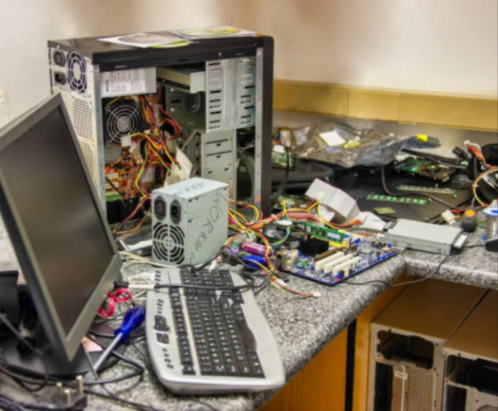
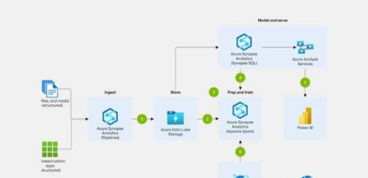
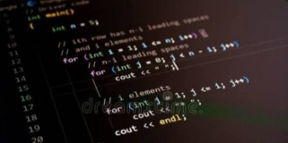

Construyendo el Futuro Tecnológico
Apoya nuestra campaña de recaudación en criptomonedas para impulsar el desarrollo de infraestructura digital independiente y autónoma.

Proyecto y Visión de Futuro
Este espacio está dedicado a la creación de infraestructura digital independiente y al desarrollo de herramientas tecnológicas orientadas a la autonomía y el trabajo constante.
Nuestro objetivo principal es escalar y profesionalizar cada desarrollo hasta estructurar un proyecto sólido capaz de consolidarse e integrarse a futuro con un fondo de inversión formal, impulsando un crecimiento estratégico, sostenible y con participación para los primeros colaboradores.

Ventaja de los primeros colaboradores:
Siempre es una oportunidad clave formar parte de un proyecto desde sus fases iniciales. Estar entre los primeros en apoyar no solo impulsa esta base operativa, sino que te posiciona como un pilar fundamental. Quienes formen parte desde ahora tendrán la oportunidad de consolidarse como accionistas y desarrolladores cuando el ecosistema alcance su madurez y se constituya formalmente el fondo de inversión.
¿A dónde va tu donación?
Tu aporte en USDT financia directamente la base operativa para hacer posible esta visión:
- Adquisición y mantenimiento de hardware, componentes y herramientas de trabajo.
- Financiamiento de servidores, conectividad y servicios de red.
- Garantizar el tiempo y los recursos dedicados al desarrollo activo e independiente.

Realiza tu Donación en USDT
Escanea el código QR o copia la dirección de la red compatible (TRC20 / BEP20) para aportar al desarrollo: